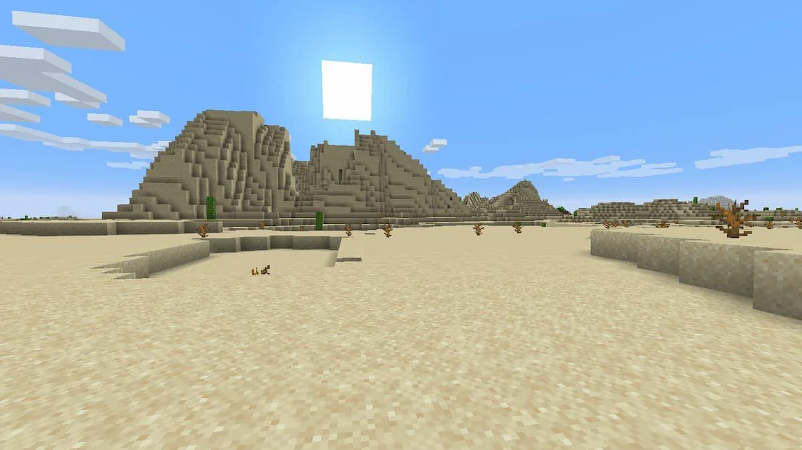

Le poulet du desert se situe
dans les biomes chaud donc 2 biomes,
le biome desert et le biome badlands


Le poulet de neige se situe
dans les biomes froid donc 2 biomes,
le biome ice spikes et le biome snowy


Voici la localisation des différents poulets.
Le poulet du desert se situe |
dans les biomes chaud donc 2 biomes, |
le biome desert et le biome badlands |
 | |
|
Le poulet de neige se situe |
dans les biomes froid donc 2 biomes, |
le biome ice spikes et le biome snowy |
|
|
|